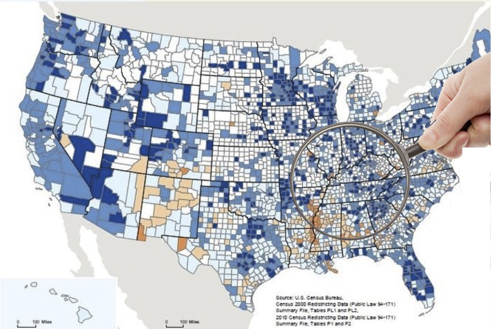

Ferdinando Fioretto
|
Every day, massive amounts of data are collected, shared, and used as input to machine learning and sophisticated optimization algorithms, providing valuable benefits to the society. However, sensitive properties can be inferred from these data, and inappropriate use might result in social and financial harm to the individuals. Managing privacy is a technical and societal challenge that must be carefully addressed to realize the promise of an ethical data-driven decision making.
|
 |
Students and Collaborators
- Pascal Van Hentenryck, Georgia Institute of Technology
- Chansoo Lee, Google
- Eric Boyd, University of Michigan
- Lesia Mitridati
- Terrence W.K. Mak, Georgia Institute of Technology
- Lyndon Shi, University of Michigan
Recent Publications
-
Terrence W.K. Mak, Ferdinando Fioretto, Pascal Van Hentenryck.
"Privacy-Preserving Obfuscation for Distributed Power Systems".
PSCC (to appear), 2020.
Downloads: [pdf] [BibTex] | Links: [web] [request code] Show moreAbstract: This paper considers the problem of releasing privacy-preserving load data of a decentralized operated power system. The paper focuses on data used to solve Optimal Power Flow (OPF) problems and proposes a distributed algorithm that complies with the notion of Differential Privacy, a strong privacy framework used to bound the risk of re-identification. The problem is challenging since the application of traditional differential privacy mechanisms to the load data fundamentally changes the nature of the underlying optimization problem and often leads to severe feasibility issues. The proposed differentially private distributed algorithm is based on the Alternating Direction Method of Multipliers (ADMM) and guarantees that the released privacy-preserving data retains high fidelity and satisfies the AC power flow constraints. Experimental results on a variety of OPF benchmarks demonstrate the effectiveness of the approach. -
Ferdinando Fioretto, Terrence W.K. Mak, Pascal Van Hentenryck.
"Bilevel Optimization for Differentially Private Optimization".
CoRR abs/2001.09508 [math.OC/cs.AI,cs.CR], 2020.
Downloads: [pdf] [BibTex] | Links: [web] [request code] Show moreAbstract: This paper studies how to apply differential privacy to constrained optimization problems whose inputs are sensitive. This task raises significant challenges since random perturbations of the input data often render the constrained optimization problem infeasible or change significantly the nature of its optimal solutions. To address this difficulty, this paper proposes a bilevel optimization model that can be used as a post-processing step: It redistributes the noise introduced by a differentially private mechanism optimally while restoring feasibility and near-optimality. The paper shows that, under a natural assumption, this bilevel model can be solved efficiently for real-life large-scale nonlinear nonconvex optimization problems with sensitive customer data. The experimental results demonstrate the accuracy of the privacy-preserving mechanism and showcase significant benefits compared to standard approaches. -
Terrence W.K. Mak, Ferdinando Fioretto, Lyndon Shi, Pascal Van Hentenryck.
"Privacy-Preserving Power System Obfuscation: A Bilevel Optimization Approach".
In IEEE Transactions on Power Systems, (in press).
Downloads: [pdf] [BibTex] | Show moreAbstract: This paper considers the problem of releasing optimal power flow (OPF) test cases that preserve the privacy of customers (loads) using the notion of Differential Privacy. It is motivated by the observation that traditional differential privacy algorithms are not suitable for releasing privacy preserving OPF test cases: The added noise fundamentally changes the nature of the underlying optimization and often leads to test cases with no solutions. To remedy this limitation, the paper introduces the OPF Load Indistinguishability (OLI) problem, which guarantees load privacy while satisfying the OPF constraints and remaining close to the optimal dispatch cost. The paper introduces an exact mechanism, based on bilevel optimization, as well as three mechanisms that approximate the OLI problem accurately. These mechanisms enjoy desirable theoretical properties, and the computational experiments show that they produce orders of magnitude improvements over standard approaches on an extensive collection of test cases. -
Ferdinando Fioretto, Pascal Van Hentenryck.
"Differential Privacy of Hierarchical Census Data: An Optimization Approach"
.
In Proceedings of the International Conference on Principles and Practice of Constraint Programming (CP), 2019.
Downloads: To appear [pdf] [BibTex] | Links: [web] [request code] Show moreAbstract: This paper is motivated by applications of a Census Bureau interested in releasing aggregate socio-economic data about a large population without revealing sensitive information. The released information can be the number of individuals living alone, the number of cars they own, or their salary brackets. Recent events have identified some of the privacy challenges faced by these organizations. To address them, this paper presents a novel differential-privacy mechanism for releasing hierarchical counts of individuals satisfying a given property. The counts are reported at multiple granularities (e.g., the national, state, and county levels) and must be consistent across levels. The core of the mechanism is an optimization model that redistributes the noise introduced to attain privacy in order to meet the consistency constraints between the hierarchical levels. The key technical contribution of the paper shows that this optimization problem can be solved in polynomial time by exploiting the structure of its cost functions. Experimental results on very large, real datasets show that the proposed mechanism provides improvements up to two orders of magnitude in terms of computational efficiency and accuracy with respect to other state-of-the-art techniques. -
Ferdinando Fioretto, Terrence W.K. Mak, Pascal Van Hentenryck.
"Differential Privacy for Power Grid Obfuscation".
In IEEE Transactions on Smart Grids, (in press).
Downloads: [pdf] [BibTex] | Show moreAbstract: The availability of high-fidelity energy networks brings significant value to academic and commercial research. However, such releases also raise fundamental concerns related to privacy and security as they can reveal sensitive commercial information and expose system vulnerabilities. This paper investigates how to release the data for power networks where the parameters of transmission lines and transformers are obfuscated. It does so by using the framework of Differential Privacy (DP), that provides strong privacy guarantees and has attracted significant attention in recent years. Unfortunately, simple DP mechanisms often result in AC-infeasible networks. To address these concerns, this paper presents a novel differentially private mechanism that guarantees AC-feasibility and largely preserves the fidelity of the obfuscated power network. Experimental results also show that the obfuscation significantly reduces the potential damage of an attack carried by exploiting the released dataset. -
Ferdinando Fioretto, Pascal Van Hentenryck.
"OptStream: Releasing Time Series Privately".
In Journal of Artificial Intelligence Research (JAIR), 2019.
Downloads: [pdf] [BibTex] | Links: [web] Show moreAbstract: Many applications of machine learning and optimization operate on data streams. While these datasets are fundamental to fuel decision-making algorithms, often they contain sensitive information about individuals, and their usage poses significant privacy risks. Motivated by an application in energy systems, this paper presents OptStream, a novel algorithm for releasing differentially private data streams under the w-event model of privacy. OptStream is a 4-step procedure consisting of sampling, perturbation, reconstruction, and post-processing modules. First, the sampling module selects a small set of points to access in each period of interest. Then, the perturbation module adds noise to the sampled data points to guarantee privacy. Next, the reconstruction module reassembles non-sampled data points from the perturbed sample points. Finally, the post-processing module uses convex optimization over the privacy-preserving output of the previous modules, as well as the privacy-preserving answers of additional queries on the data stream, to improve accuracy by redistributing the added noise. OptStream is evaluated on a test case involving the release of a real data stream from the largest European transmission operator. Experimental results show that OptStream may not only improve the accuracy of state-of-the-art methods by at least one order of magnitude but also supports accurate load forecasting on the privacy-preserving data. -
Ferdinando Fioretto, Terrence W.K. Mak, Pascal Van Hentenryck.
"Privacy-Preserving Obfuscation of Critical Infrastructure Networks"
.
In Proceedings of the International Joint Conference on Artificial Intelligence (IJCAI), 2019.
Downloads: To appear [pdf] [BibTex] | Links: [web] [request code] Show moreAbstract: The paper studies how to release data about a critical infrastructure network (e.g., the power network or a transportation network) without disclosing sensitive information that can be exploited by malevolent agents, while preserving the realism of the network. It proposes a novel obfuscation mechanism that combines several privacy-preserving building blocks with a bi-level optimization model to significantly improve accuracy. The obfuscation is evaluated for both realism and privacy properties on real energy and transportation networks. Experimental results show the obfuscation mechanism substantially reduces the potential damage of an attack exploiting the released data to harm the real network. -
Ferdinando Fioretto, Pascal Van Hentenryck.
""Privacy-Preserving Federated Data Sharing".
In Proceedings of the International Conference on Autonomous Agents and Multiagent Systems (AAMAS), 2019.
Downloads: [pdf] [slides] [BibTex] | Links: [web] Show moreAbstract: Consider a set of agents with sensitive datasets who are interested in the same prediction task and would like to share their datasets without revealing private information. For instance, the agents may be hospitals with their own historical databases and the task may be the diagnosis of a rare form of disease. This paper investigates whether sharing privacy-preserving versions of these datasets may improve the agent predictions. It proposes a Multi-agent Privacy-preserving Data Sharing (MPDS) protocol that each agent can run locally and produce a privacy-preserving version of its original dataset. The MPDS protocol is evaluated on several standard prediction tasks and the experimental results demonstrate the potential of sharing privacy-preserving datasets to produce accurate predictors. -
Ferdinando Fioretto, Terrence W.K. Mak, Pascal Van Hentenryck.
"Differential Privacy for Power Grid Obfuscation".
CoRR abs/1901.06949 [cs.AI], 2019.
Downloads: [pdf] [BibTex] | Links: [web] [request code] Show moreAbstract: The availability of high-fidelity energy networks brings significant value to academic and commercial research. However, such releases also raise fundamental concerns related to privacy and security as they can reveal sensitive commercial information and expose system vulnerabilities. This paper investigates how to release power networks where the parameters of transmission lines and transformers are obfuscated. It does so by using the framework of Differential Privacy (DP), that provides strong privacy guarantees and has attracted significant attention in recent years. Unfortunately, simple DP mechanisms often result in AC-infeasible networks. To address these concerns, this paper presents a novel differential privacy mechanism that guarantees AC-feasibility and largely preserves the fidelity of the obfuscated network. Experimental results also show that the obfuscation significantly reduces the potential damage of an attacker exploiting the release of the dataset. -
Ferdinando Fioretto, Chansoo Lee, Pascal Van Hentenryck.
"Constrained-based Differential Privacy for Private Mobility".
In Proceedings of the International Conference on Autonomous Agents and Multiagent Systems (AAMAS), 2018.
Downloads: [pdf] [slides] [BibTex] | Links: [web] [request code] Show moreAbstract: Ubiquitous mobile and wireless communication systems have the potential to revolutionize transportation systems, making accurate mobility traces and activity-based patterns available to optimize their design and operations. It also poses significant privacy risks, potentially revealing highly sensitive personal information. This paper studies the use of differential privacy to release mobility data that can be used for smart transportation systems. It shows that existing approaches do not provide the desired fidelity for practical uses. To remedy this critical limitation, the paper proposes the idea of optimization-based differential privacy that casts the production of a private dataset as an optimization problem that minimizes the impact of added Laplacian noise on the algorithmic task at hand. When applied to a city-level multi-modal transit system, experimental results show that the design and operations of the transportation system have similar performance measures when optimized over the real and private datasets. The results also indicate that optimization-based differential privacy may improve the accuracy of state-of-art privacy methods by an order of magnitude. -
Ferdinando Fioretto, Pascal Van Hentenryck.
"Constrained-based Differential Privacy: Releasing Optimal Power Flow Benchmarks Privately".
In Proceedings of the International Conference on the Integration of Constraint Programming, Artificial Intelligence, and Operations Research (CPAIOR), 2018.
Downloads: [pdf] [slides] [BibTex] | Links: [web] [request code] Show moreAbstract: This paper considers the problem of releasing optimal power flow benchmarks that maintain the privacy of customers (loads) using the notion of Differential Privacy. It is motivated by the observation that traditional differential-privacy mechanisms are not accurate enough: The dded noise fundamentally changes the nature of the underlying optimization and often leads to test cases with no solution. To remedy this limitation, the paper introduces the framework of Constraint-Based Differential Privacy (CBDP) that leverages the post-processing immunity of differential privacy to improve the accuracy of traditional mechanisms. More precisely, CBDP solves an optimization problem to satisfies the problem-specific constraints by redistributing the noise. The paper shows that CBDP enjoys desirable theoretical properties and produces orders of magnitude improvements on the largest set of test cases available. -
Ferdinando Fioretto, Pascal Van Hentenryck.
"Differential Private Stream Processing of Energy Consumption".
CoRR abs/1808.01949, 2018.
Downloads: [pdf] [BibTex] | Links: [web] Show moreAbstract: A number of applications benefit from continuously releasing streams of personal data statistics. The process, however, poses significant privacy risks. Motivated by an application in energy systems, this paper presents OptStream, a novel algorithm for releasing differential private data streams. OptStream is a 4-step procedure consisting of sampling, perturbation, reconstruction, and post-processing modules. The sampling module selects a small set of points to access privately in each period of interest, the perturbation module adds noise to the sampled data points to guarantee privacy, the reconstruction module re-assembles the non-sampling data points from the perturbed sampled points, and the post-processing module uses convex optimization over the private output of the previous modules, as well as the private answers of additional queries on the data stream, to ensure consistency of the data's salient features. OptStream is used to release a real data stream from the largest transmission operator in Europe. Experimental results show that OptStream not only improves the accuracy of the state-of-the-art by at least one order of magnitude on this application domain, but it is also able to ensure accurate load forecasting based on the private data.